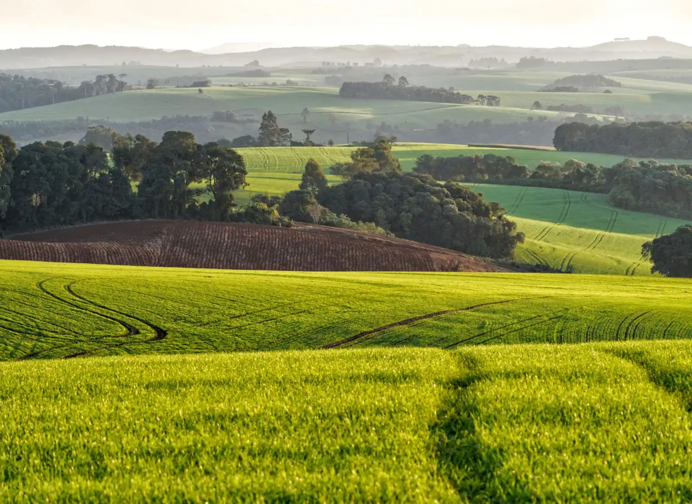

Para proprietários
Vender sem vitrine
Venda, arrendamento ou parceria com discrição: você escolhe se o preço e a região aparecem. Ninguém recebe matrícula, mapa ou endereço sem se identificar e sem a sua autorização.
Como trabalhamos
Do primeiro café à escritura
Seis etapas, sempre com você decidindo o que é divulgado.
Conversa e visita técnica
O consultor visita a propriedade, entende seus objetivos e o prazo da venda.
Documentos conferidos
Matrícula, georreferenciamento, CAR, CCIR, ITR e contratos vigentes. Apontamos o que falta antes de anunciar.
Ficha técnica e fotos aéreas
Uso do solo, água, topografia e estrutura organizados numa ficha profissional, com sobrevoo de drone.
Divulgação sob sigilo
Só região aproximada; preço aberto ou sob consulta. Também oferecemos direto à nossa lista de compradores.
Compradores filtrados
Cadastro, termo de confidencialidade e comprovação de capacidade antes de qualquer visita.
Negociação e escritura
Proposta por escrito, apoio na diligência e acompanhamento até o registro.
Arrendamento e parceria
Prefere arrendar?
Encontramos arrendatários e parceiros com histórico comprovado, preparamos a minuta do contrato (em reais ou em produto) e acompanhamos as safras. O direito de preferência do arrendatário é analisado em toda venda.
Ver áreas para arrendamentoDocumentos para separar
Documentos que aceleram
- Matrícula atualizada (até 30 dias)
- Georreferenciamento certificado no SIGEF
- Recibo do CAR e situação da reserva legal
- CCIR e ITR dos últimos 5 anos
- Contratos de arrendamento ou parceria vigentes
- Outorgas de uso de água, se houver irrigação ou represas